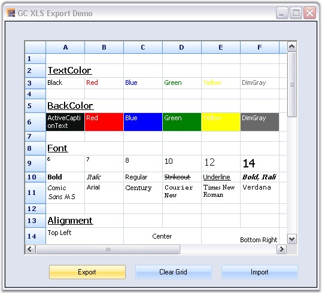
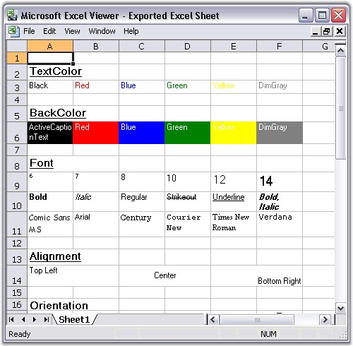

Exporting data to an Excel spreadsheet is one of the most commonly preferred features in the .NET world. The Essential Grid control has in-built support for an Excel spreadsheet export. The class GridExcelConverterControl provides support for exporting data from a Grid control or Grid Data Bound Grid control to an Excel spreadsheet for verification and/or computation. This class automatically copies a grid's styles and formats to an Excel spreadsheet. The GridExcelConverterControl class is derived from the GridExcelConverterBase class. The XlsIO libraries are used to support the conversion of the grid contents to Excel.
For the control to function, the following dll files should be added along with the default dll files in the reference folder:
· Syncfusion.GridConverter.Base
· Syncfusion.XlsIO.Base
The GridToExcel method should be used to export the grid to an excel sheet. Following code example illustrates how to convert the content in Grid control to an Excel spreadsheet.
1. Using C#
|
[C#]
Syncfusion.GridExcelConverter.GridExcelConverterControl gecc = new Syncfusion.GridExcelConverter.GridExcelConverterControl(); gecc.GridToExcel(this.gridControl1.Model, @"C:\MyGC.xls"); |
2. Using VB.NET
|
[VB.NET]
Dim gecc As Syncfusion.GridExcelConverter.GridExcelConverterControl = New Syncfusion.GridExcelConverter.GridExcelConverterControl() gecc.GridToExcel(Me.gridControl1.Model, "C:\MyGC.xls") |

Figure 140: Grid to be Exported
Following code example illustrates how to convert the content in Grid Data Bound Grid control to an Excel spreadsheet.
1. Using C#
|
[C#]
Syncfusion.GridExcelConverter.GridExcelConverterControl gecc = new Syncfusion.GridExcelConverter.GridExcelConverterControl(); gecc.GridToExcel(this.gridDataBoundGrid1.Model, @"C:\MyGC.xls"); |
2. Using VB.NET
|
[VB.NET]
Dim gecc As Syncfusion.GridExcelConverter.GridExcelConverterControl = New Syncfusion.GridExcelConverter.GridExcelConverterControl() gecc.GridToExcel(Me.gridDataBoundGrid1.Model, "C:\MyGC.xls") |

Figure 141: Exported Excel Sheet
A sample demonstrating this feature is available under the following sample installation path.
<Install Location>\Syncfusion\EssentialStudio\[Version Number]\Windows\Grid.Windows\Samples\2.0\Export\GC XLS Export Demo